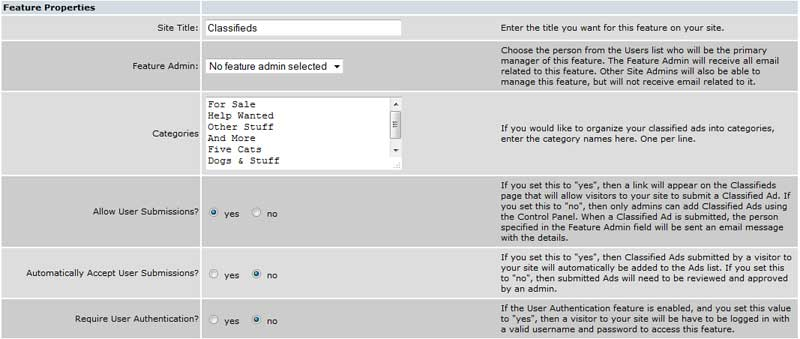
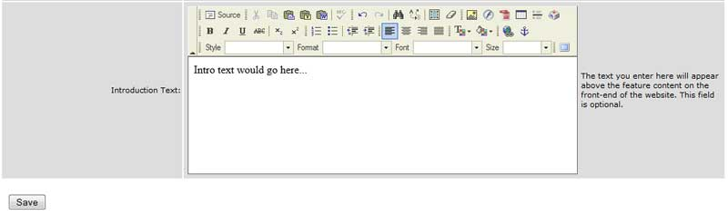
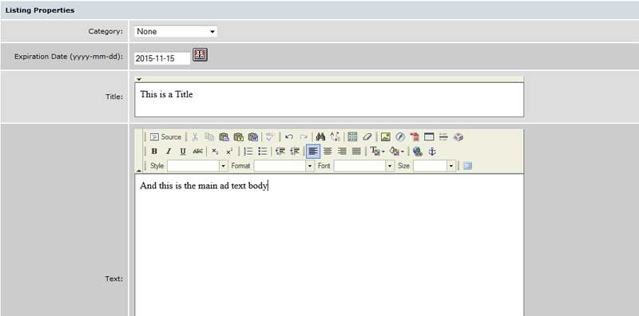
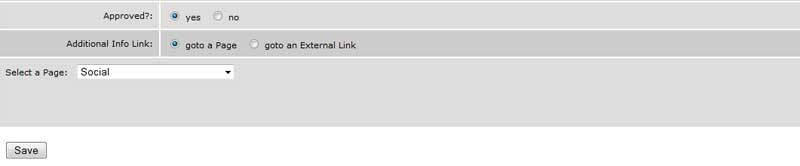
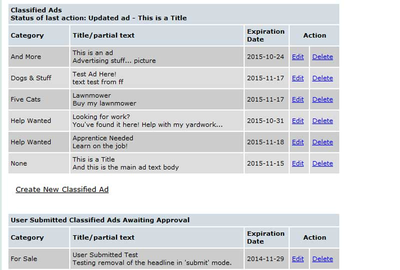
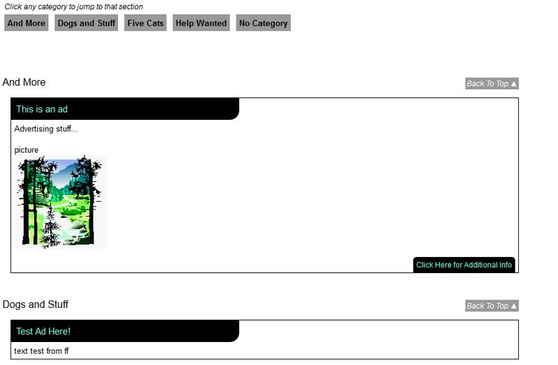

Working with Ads: {{adpanel.msg}}
Classified Ads are a popular feature on many sites. They are easy to set up, easy to maintain, and offer a reason for visitors to go to the site often.
Select “Features” from the Admin Panel (button) and then locate the Classified or Service feature. These two features are identical in setup. We offer two so you can have different sections if you'd like- one for resident classifieds and one for paid advertising, for example.
If the feature is not enabled, simply select the “enable” link. To set up the feature, first select “Edit” from the feature page. You will see a screen similar to the one below.
Site Title: If you want to change the default system title, edit this field and save.
Feature Admin: Allows you to assign a feature administrator (someone else with the authority to manage your ads). A feature administrator must be defined in the User Record before their name will be displayed in the “Feature Admin” drop-down menu. Once you have set up their User Record and assigned them as the administrator for Classifieds or Service Directory, they will see a “Manage” button on their Classifieds page that allows them to manage the ads without the need to go into the admin panel.
Categories: Insert any category titles ("Automotive", "Landscaping" , "General") that you'd like to use for this feature. If you want to force the sequence of the display on the ad page, simply place a number before the text of each category (1-For Sale, 2-Help Wanted, etc). If you do not force the sequence, they will appear alphabetically.
Allow User Submissions?: “Allow User Submissions” and “Automatically Accept User Submissions” work together. If you want your site visitors to be able to submit their own ads, set the “Allow” button to “Yes.” If you want the ads reviewed by the administrator before they are posted (a good idea), set the “Automatically” button to “No” and be sure to assign a feature administrator.
Require User Authentication: Secures the ads and requires a site visitor to log on before viewing the ads. If you set this property to “No,” any site visitor may view the ads but they will also have a “Submit” button on their page (if you've set it to Allow User Submissions.
Both the Classified and Service Directory features have an Introduction Text option at the bottom of the 'Edit' link. Any text placed here will appear at the top of the list of ads on your website. This is a great place to put info about submitting ads (pricing, restrictions, etc).
Enter any text you'd like and use the formatting toolbar if you want to insert images, links, or format the text. If you ever want to remove intro text you've already entered, just delete the text and save.
On the "Manage" link for the feature, you'll see a link to "Create New Classified Ad" below the list of currently approved ads. This takes you to the screen for entering ads is used both by the administrator and the site visitor who selects the “Submit” button:
Category: Select a category for this ad - these are the categories you built on the set-up page.
Expiration Date: May be entered manually or selected from a calendar which is displayed by selecting the calendar icon on the right side of the field.
Title: Enter a short description of the ad, e.g. “Baby Stroller” or the Business name.
Text: Enter the ad itself, including contact information. Use the formatting toolbar to format text, include pictures you've uploaded to the site, or include links.
Approved?: Ads created by a site admin will automatically be approved. Ads submitted by users (if allowed and not automatically accepted) will be initially set to "No". Set it to "Yes" and save to allow the ad to display on the site.
Additional Info Link: Provides a way to link the ad to another page on your site or to an external URL, causing an “additional info” link to appear at the bottom of the ad.
When you click the "Manage" link for the Classifieds or Service Directory feature, you'll see a list of current ads, a link to 'Create New Classified Ad' (see the Creation tag for details) and a list of user submitted ads that are not yet approved:
Classified Ads: This list at the top of your screen is populated by the currently approved ads on the site. Click the 'edit' or 'delete' link for any ad to perform that action for it.
Create New Classified Ad: Click this link to create a fresh ad (see the Creation tag)
User Submitted Classified Ads Awaiting Approval: This list contains ads that have been submitted to your site that aren't yet approved. Click to edit one, then scroll down and set the 'Approved' option to 'yes' and save to allow it on the site.
Note that ads can be submitted with no actual content (usually by a user error or someone who decides not to submit after creating a new ad). It's safe to delete these as needed.
The user interface is shown below. Your categories appear at the top (a category will only appear if it has at least one ad assigned to it). You can click on a category to jump straight to that section. Each ad is contained in its own outline, with headline (the Title field from your creation screen) and main ad body. If you've included the Additional Link option, you'll see a notice in the bottom right.
The background and text colors of the individual ads will automatically match the look n feel options you chose in that section.
Note that in the Service Directory feature, there will be one small addition. A 'Created On' line of text will appear in the top right of each ad. This doesn't appear in the Classifieds feature, so use whichever you prefer.
